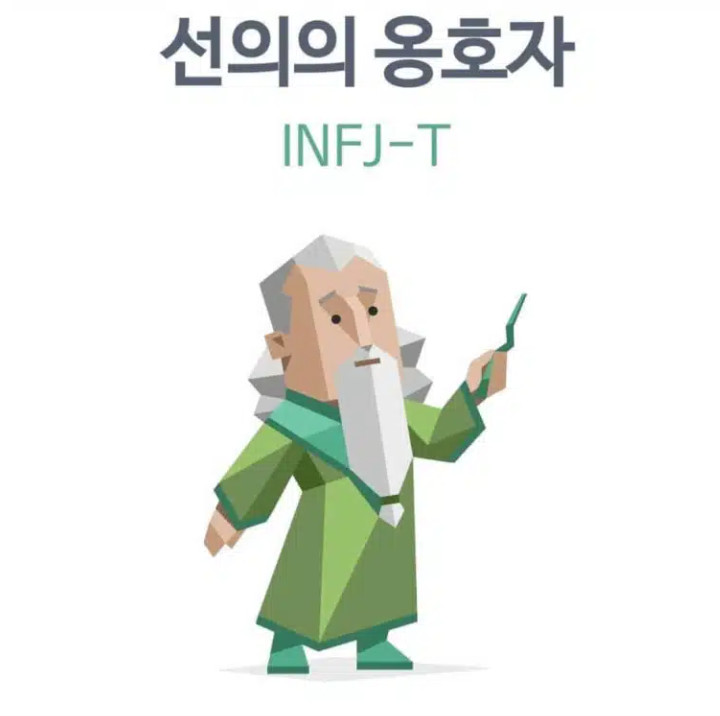

내 장단점
장점 : 누구보다 열정이 가득하고 끈기가 넘친다. 포기하려고 하지않는다.
단점 : 너무 이것저것 해보려다 금방 지친다.
- 이상주의적, 완벽주의적 성향을 추구한다.
- 3차 기능이 Ti(내향 사고)로 겉으로는 공감할 수 있지만,
속으로는 비판적으로 생각하는 경향이 있다. 따라서 감정형(F)
중에서는 대체로 사고(T) 성향이 높은 편이다. 이는 ISFJ와 같다. - 주기능이 Ni(내향 직관)으로 과거와 현재의 공통점을 찾아 미래를 예측하는 것을 좋아하며
상상력, 창의력과 독창성이 뛰어나다. 때문에 비범한 통찰력을 지녔다. - 본인만의 철칙이 뚜렷하여 고집이 세다고 느껴질 수 있다.
- 사회적 불의에 민감하여 높은 도덕 관념을 지니고 있다.
- 생활에서 INFJ는 보수적이면서 동시에 반항적이다.
- INFJ는 감정적이면서 동시에 이성적이다.
INFJ 특징 정리
